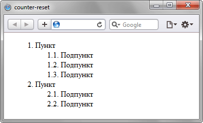

counter-reset
Устанавливает переменную, в которой будет храниться счётчик отображений определенного элемента, а также начальное значение счётчика. Такой счётчик может выводиться с помощью свойства content и псевдоэлементов ::after и ::before.
Краткая информация
| Значение по умолчанию | none |
|---|---|
| Наследуется | Нет |
| Применяется | Ко всем элементам |
Синтаксис
counter-reset: none | <переменная> | <число>Значения
- none
- Запрещает инициацию счётчика для текущего селектора.
- inherit
- Наследует значение родителя.
- <переменная>
- Задаёт одну или несколько переменных, в которых будет храниться значение счётчика. Значения разделяются между собой пробелом.
- <число>
- Начальное значение каждого идентификатора. По умолчанию равно 0.
Пример
<!DOCTYPE html>
<html>
<head>
<meta charset="utf-8">
<title>counter-reset</title>
<style>
li { list-style-type: none; } /* Убираем исходную нумерацию у списка */
ol { counter-reset: list1; } /* Инициируем счетчик */
ol li:before {
counter-increment: list1; /* Увеличиваем значение счетчика */
content: counter(list1) ". "; /* Выводим число */
}
ol ol { counter-reset: list2; } /* Инициируем счетчик вложенного списка */
ol ol li:before {
counter-increment: list2; /* Увеличиваем значение счетчика вложенного списка */
content: counter(list1) "." counter(list2) ". "; /* Выводим число */
}
</style>
</head>
<body>
<ol>
<li>Пункт
<ol>
<li>Подпункт</li>
<li>Подпункт</li>
<li>Подпункт</li>
</ol>
</li>
<li>Пункт
<ol>
<li>Подпункт</li>
<li>Подпункт</li>
</ol>
</li>
</ol>
</body>
</html>Результат данного примера показан на рис. 1.

Рис. 1. Применение свойства counter-reset
Объектная модель
Объект.style.counterReset
Примечание
Для элементов, у которых установлено display: none, значение счётчика не меняется.
Спецификация
| Спецификация | Статус |
|---|---|
| CSS Lists and Counters Module Level 3 | Рабочий проект |
| CSS Level 2 (Revision 1) | Рекомендация |
Браузеры
| Internet Explorer | Chrome | Opera | Safari | Firefox |
| 8 | 2 | 9.2 | 3 | 1 |
| Android | Firefox Mobile | Opera Mobile | Safari Mobile |
| 2.1 | 1 | 9.5 | 3 |